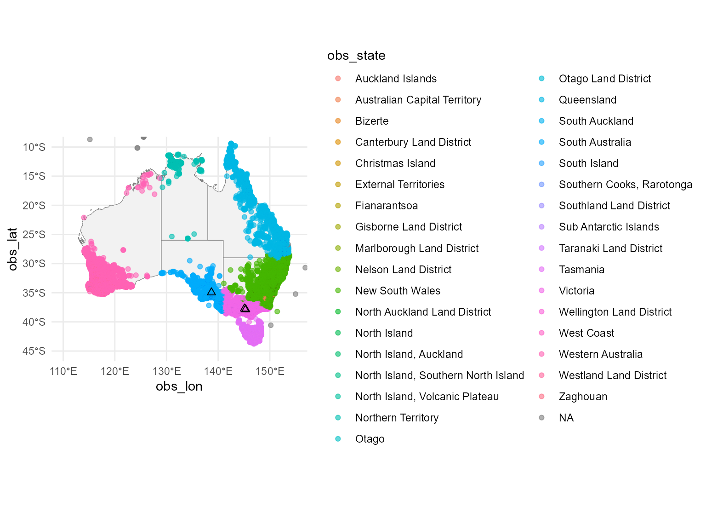
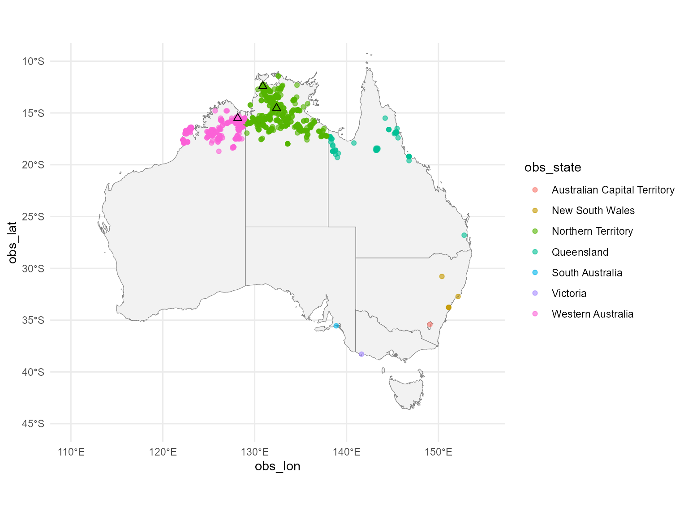
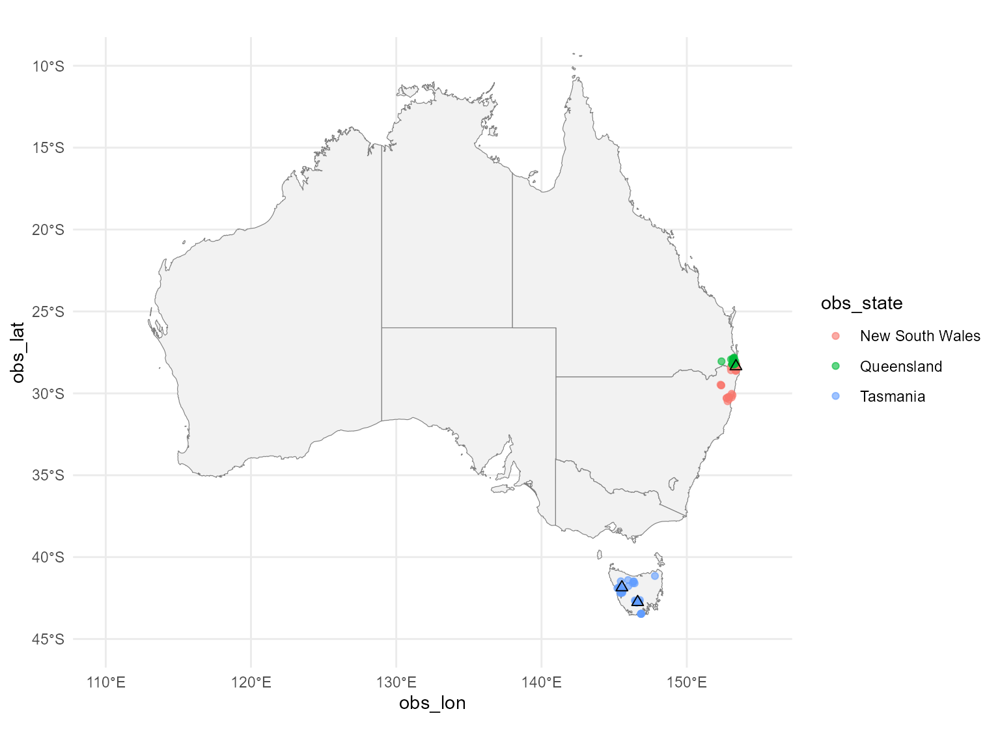
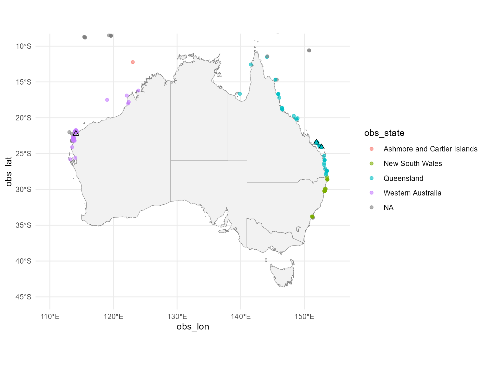

#> # A tibble: 3 × 8
#> weather_station_id n stname stn_lat stn_lon address stn_city stn_state
#> <chr> <int> <chr> <dbl> <dbl> <chr> <chr> <chr>
#> 1 948720-99999 12042 FERNY CRE… -37.9 145. Stewar… Stewart… Victoria
#> 2 958740-99999 9376 VIEWBANK … -37.7 145. 3, Rai… Rainsfo… Victoria
#> 3 956780-99999 8712 MOUNT LOF… -35.0 139. Bilba … Bilba T… South Au…
#> # A tibble: 3 × 8
#> weather_station_id n stname stn_lat stn_lon address stn_city stn_state
#> <chr> <int> <chr> <dbl> <dbl> <chr> <chr> <chr>
#> 1 941310-99999 1078 TINDAL -14.5 132. RAAF B… RAAF Ba… Northern…
#> 2 941200-99999 650 DARWIN IN… -12.4 131. Henry … Henry W… Northern…
#> 3 952140-99999 400 WYNDHAM A… -15.5 128. Arthur… Arthur … Western …
#> # A tibble: 3 × 8
#> weather_station_id n stname stn_lat stn_lon address stn_city stn_state
#> <chr> <int> <chr> <dbl> <dbl> <chr> <chr> <chr>
#> 1 945820-99999 51 MURWILLUM… -28.4 153. Commer… Commerc… New Sout…
#> 2 959520-99999 11 MOUNT READ -41.8 146. Mount … Mount R… Tasmania
#> 3 949630-99999 10 MAYDENA P… -42.8 147. Junee … Junee R… Tasmania
#> # A tibble: 3 × 8
#> weather_station_id n stname stn_lat stn_lon address stn_city stn_state
#> <chr> <int> <chr> <dbl> <dbl> <chr> <chr> <chr>
#> 1 943880-99999 681 LADY ELLI… -24.1 153. Lady E… Lady El… Queensla…
#> 2 943860-99999 128 HERON ISL… -23.4 152. Heron … Heron I… Queensla…
#> 3 943020-99999 101 LEARMONTH -22.2 114. Minily… Minilya… Western …